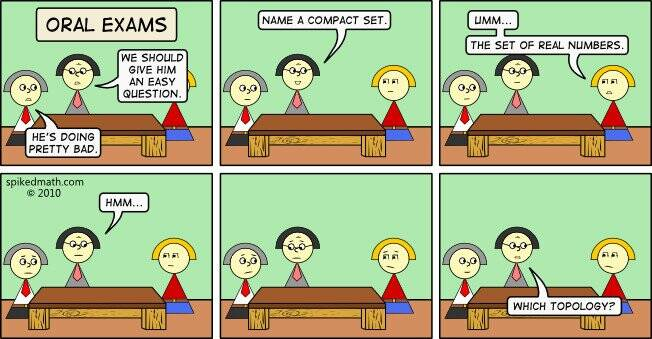

Junyu Lu
Ph.D. in Mathematics
I work in low-dimensional topology and geometric group theory, with particular interests in left-orderable groups, the orderability of 3-manifold groups, and the L-space conjecture.
Ph.D., University of Manitoba (2021–2026), supervised by
Adam Clay.
Thesis: Order Detection and Left-orderability of 3-Manifold Groups.
186 Dysart Road, Winnipeg, MB R3T 2N2, Canada

Research
Publications and preprints
- A. Clay and J. Lu, “Order-detection, representation-detection, and applications to cable knots,” Transactions of the American Mathematical Society 379(3) (2026), 1755–1798. doi:10.1090/tran/9525.
- A. Clay and J. Lu, “Order-detection and non-left-orderable surgeries on links,” revised manuscript submitted to Pacific Journal of Mathematics, 20 pp. arXiv:2505.01564.
- A. Clay, J. Lu, and T. Staruch, “A combinatorial approach to obstructing left-orderability of Dehn fillings,” preprint, 21 pp. arXiv:2607.15603.
Research and seminar talks
- “3-Manifold Groups ABC,” Geometry and Topology Learning Seminar, University of Manitoba, 2025.
- “Order-detected Slopes on Cable Knots,” Graduate Research Talk, Redbud Conference, Spring 2024.
- “A Step Towards Character Varieties and A-polynomials,” Geometry and Topology Learning Seminar, University of Manitoba, 2024.
- “A Layman’s Introduction to Knots and Jones Polynomials,” Geometry and Topology Learning Seminar, University of Manitoba, 2023.
- “Left Orderability and 3-Manifold Groups: A Short Invitation,” Graduate Mathematics Seminar, University of Manitoba, 2023.
- “On Convex Normal Subgroups,” Geometric Group Theory Seminar, McGill University, 2018.
Teaching
Instructor, University of Manitoba
- MATH 2170, Number Theory 1, Winter 2024.
- MATH 1500, Introduction to Calculus, Winter 2023.
Teaching assistant
University of Manitoba: MATH 1500, 1524, 1240, 2040, 2080, 2090, and other first- and second-year mathematics courses;
McGill University: MATH 141 (Calculus 2);
Nanyang Technological University: first- and second-year calculus and algebra courses.
Scholarships and fellowships
- Dr. Jiri Sichler Memorial Scholarship in Algebra, University of Manitoba, 2024–2025.
- Fellowship for Education Purposes, University of Manitoba, 2021–2026.